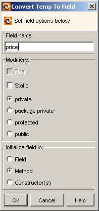

Converts a local variable to a field, making it available for the entire class. RefactorIT will ask if the created field should be initialized in its declaration, in constructors or in the same place that the local variable was initialized in. Also, it is possible to specify the new field's name and define the field's modifiers.

public class Temp2Field {
public void method() {
int price = 10;
System.out.println("Price: " + price);
}
}
Use Refactoring "Convert Temp To Field" on the "price" declaration. Choose "initialize field in:" in a "constructor(s)". Specify a new field name - "cost". Click Ok and you will get the following code:
public class Temp2Field {
private int cost;
Temp2Field() {
cost = 10;
}
public void method() {
System.out.println("Price: " + cost);
}
}
This refactoring converts temporary (local/automatic) variable to field. This means that local variable field declaration moves to the class level and all local variable field calls are replaces with class field calls. Notice, that this refactoring refuses to perform if a variable with the same name already exists in the same scope.